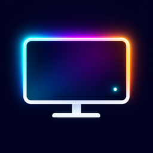
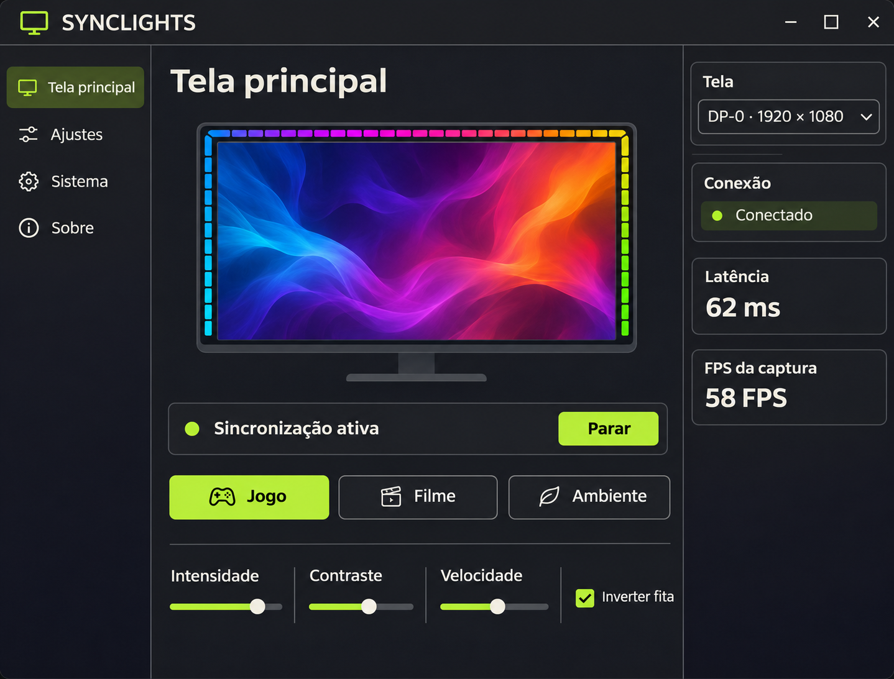

01
Mais resposta
Velocidade muda apenas a transição entre cenas. A captura permanece no máximo do motor.

SYNC LIGHTSSincronize as cores da tela com sua fita LED. Captura por regiões, resposta rápida e um app desktop pequeno que fica na bandeja.

O motor Rust lê apenas as bordas cobertas pelos 65 LEDs. A escrita USB só ocorre quando as cores mudam. Preview separado: 320×180 a 10 FPS.
Velocidade muda apenas a transição entre cenas. A captura permanece no máximo do motor.
Grade 8×8, box integral, Gaussian, mediana e luminância oferecem amostragens diferentes. Resize é comparador com FPS limitado.
XFixes inclui o ponteiro na amostra quando disponível; o preview também o mostra.
Área média, contraste forte, intensidade alta e transição imediata.
Amostra gaussiana, contraste e intensidade suaves, transição macia sem baixar a captura.
Peso por luminância para luz estável. Monitor, inversão e opções são salvos.
Testado nesta máquina com a fita USB conectada: FPS medido na interface, cursor visível na amostra, pré-visualização limitada e perfis persistentes.
Requer Rust, CMake, Qt6 Widgets, FFmpeg com x11grab e sessão X11.
git clone https://github.com/edersonff/synclights.git
cd synclights
cargo test --release --offline
cmake -S . -B build -DCMAKE_BUILD_TYPE=Release
cmake --build build -j2
cmake --install build --prefix "$HOME/.local"
~/.local/bin/synclights-desktop --openA regra udev é instalada uma vez. Hardware validado: ROBOBLOQ 1a86:fe07; Wayland e outros dispositivos aguardam teste. Ver medições e métodos →